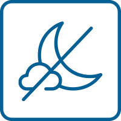
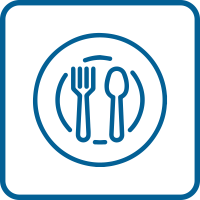
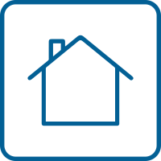

¡HOLA AGUS!
YA LLEGA EL DÍA
Este fin de semana construiremos junto a 22 familias su nuevo módulo sanitario. El fin de semana pasado descargamos los materiales y ya está todo listo para arrancar a construir.
¿Tenés alguna duda?
Vamos a intentar despejarlas acá:
- 
No nos quedamos a dormir. Volveremos temprano para que puedas estar en tu casa a las 20 h.
- 
Las comidas de ambos días las provee Módulo Sanitario. En el caso de que tengas alguna dieta especial, te pedimos lleves tu vianda.

Vamos a armar un grupo de WhatsApp por equipo de construcción para que se conozcan y despejen cualquier otra duda.

En ese mismo grupo comunicaremos cómo se hace el traslado hacia el barrio donde se construye y cómo tramitar el permiso de circulación.
- 
Si en los últimos días tuviste algun contacto estrecho (o dudoso), fiebre, dolor de cuerpo o algún otro síntoma de Covid-19, te pedimos que nos avises y te quedes en tu casa en esta oportunidad, así evitamos riesgos de contagio.
¿Qué no te podés olvidar?
- 
Tu barbijo
- 
Ropa y calzado cómodo
- 
Guantes de construcción o jardinería
- 
Protector solar y repelente
- 
Tus propios utensilios para las comidas
- 
Herramientas
¿Sabés cómo se construye el Módulo? Llevá el manual para guiarte.
DescargarTe recomendamos usar la remera de Módulo para que te identifiquen en el barrio.
Encargar remeraEn el contexto en el que estamos, pensar que una persona no tenga un baño dentro de su casa significa que su salud está gravemente expuesta. Esta urgencia nos emociona y activa a la acción. Después de este fin de semana, 22 familias podrán estar más tranquilas, sanas y cuidadas con un baño dentro del hogar.
Hoy más que nunca, gracias por estar.
¡¡Nos vemos el sábado!!